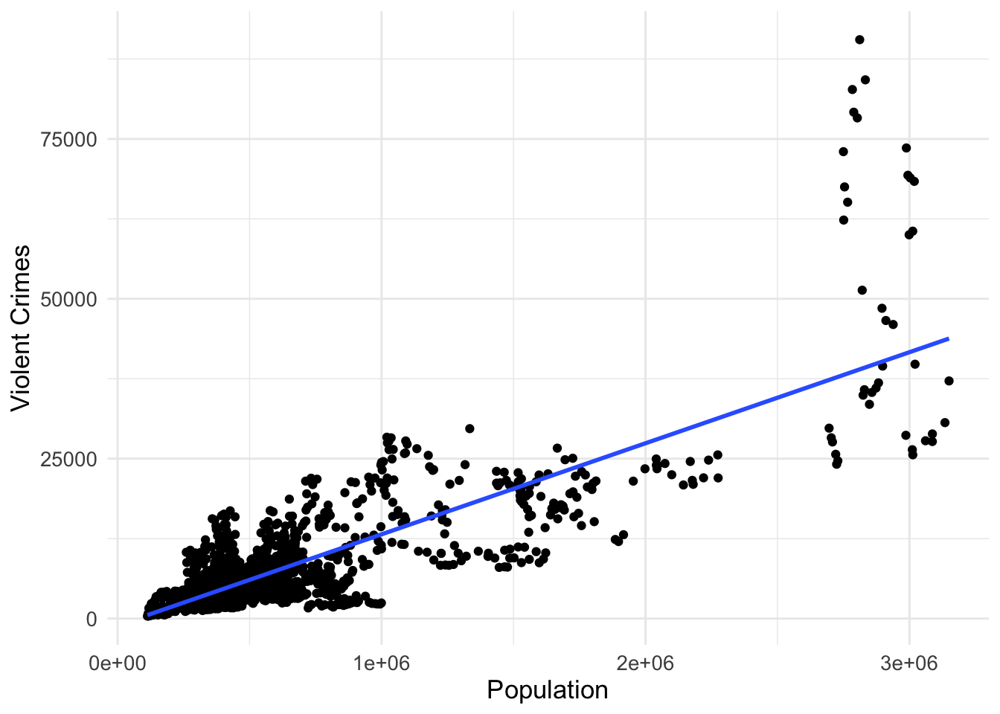
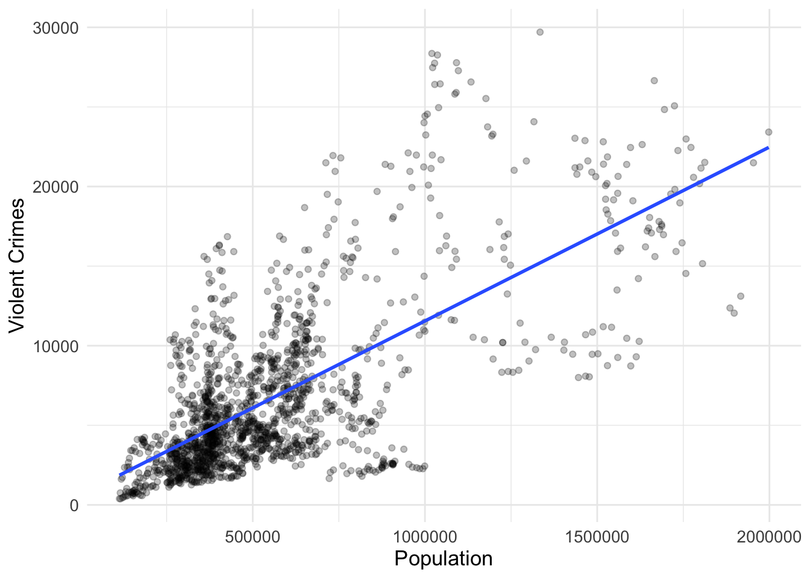
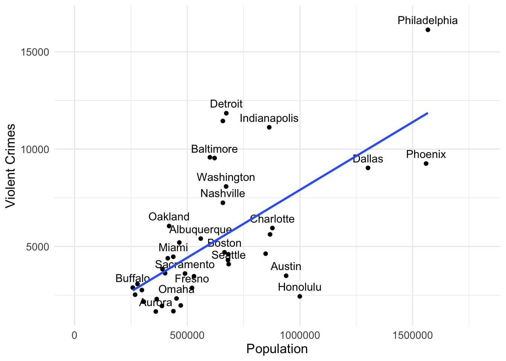
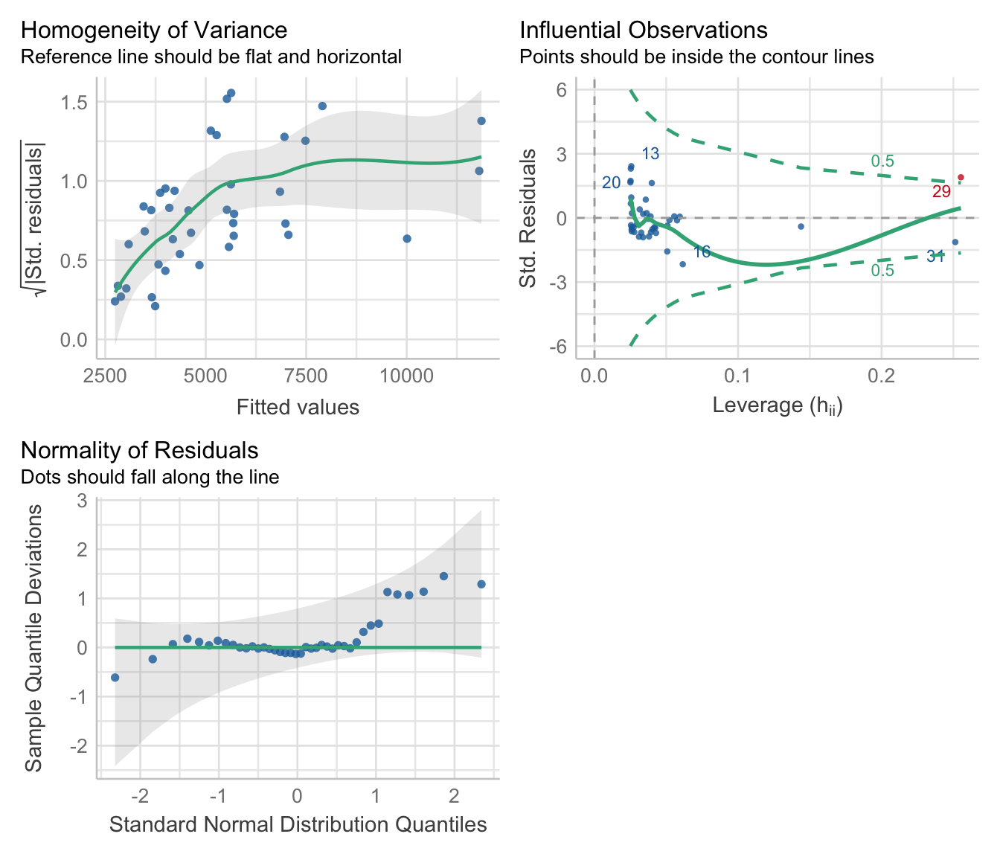

Workshop 6 Regression Part 1
In this workshop we will explore Simple Regression in the context of the General Linear Model (GLM). You will also have the opportunity to build some regression models where you predict an outcome variable on the basis of one predictor. You will also learn how to run model diagnostics to ensure you are not violating any key assumptions of regression.
6.1 Overview
First off I’d like you to watch the following video which starts off by revising the basics of correlation, before examining how we build regressions models.
6.2 Simple Linear Regression
After having watched the video above, I’d like you to work through the following simple linear regression example in R. Remember to create a new .Rproj file to keep things organised.
6.2.1 The Packages We Need
First we need to install the packages we need. We’re going to install the tidyverse set of packages plus a few others. The package Hmisc allows us to use the rcorr() function for calculating Pearson’s r, and the performance package so we can test our model assumptions. Remember, if you haven’t previously installed these packages on your laptop you first need to type install.packages("packagename") in the console before you can call the library() function for that package. You may also need to install the package see to get the performance package working. If so, do that in the console by typing install.packages("see").
6.2.2 Import the Data
Import the dataset called crime_dataset.csv - this dataset contains population data, housing price index data and crime data for cities in the US.
We can use the function head() to display the first few rows of our dataset called “crime”.
crime <- read_csv("https://raw.githubusercontent.com/george-farmer/PCHN63101/refs/heads/main/reg_pt1.csv")
head(crime)## # A tibble: 6 × 9
## Year index_nsa `City, State` Population `Violent Crimes` Homicides Rapes
## <dbl> <dbl> <chr> <dbl> <dbl> <dbl> <dbl>
## 1 1975 41.1 Atlanta, GA 490584 8033 185 443
## 2 1975 30.8 Chicago, IL 3150000 37160 818 1657
## 3 1975 36.4 Cleveland, OH 659931 10403 288 491
## 4 1975 20.9 Oakland, CA 337748 5900 111 316
## 5 1975 20.4 Seattle, WA 503500 3971 52 324
## 6 NA NA <NA> NA NA NA NA
## # ℹ 2 more variables: Assaults <dbl>, Robberies <dbl>6.2.3 Tidy the Data
First let’s do some wrangling. There is one column that combines both City and State information. Let’s separate that information out into two new columns called “City” and “State” using the function separate(). We’ll also rename the columns to change the name of the “index_nsa” column to “House_price” and get rid of the space in the “Violent Crimes” heading.
crime_tidied <- crime %>%
separate(col = "City, State", into = c("City", "State")) %>%
rename(House_price = index_nsa) %>%
rename(Violent_Crimes = "Violent Crimes")
head(crime_tidied)## # A tibble: 6 × 10
## Year House_price City State Population Violent_Crimes Homicides Rapes
## <dbl> <dbl> <chr> <chr> <dbl> <dbl> <dbl> <dbl>
## 1 1975 41.1 Atlanta GA 490584 8033 185 443
## 2 1975 30.8 Chicago IL 3150000 37160 818 1657
## 3 1975 36.4 Cleveland OH 659931 10403 288 491
## 4 1975 20.9 Oakland CA 337748 5900 111 316
## 5 1975 20.4 Seattle WA 503500 3971 52 324
## 6 NA NA <NA> <NA> NA NA NA NA
## # ℹ 2 more variables: Assaults <dbl>, Robberies <dbl>6.2.4 Plot the Data
We might first think that as population size increases, crime rate also increases. Let’s first build a scatter plot.
crime_tidied %>%
ggplot(aes(x = Population, y = Violent_Crimes)) +
geom_point() +
geom_smooth(method = "lm", se = FALSE) +
theme_minimal() +
theme(text = element_text(size = 13)) +
labs(x = "Population",
y = "Violent Crimes")
6.2.5 Pearson’s r
This plot looks pretty interesting. How about calculating Pearson’s r?
## x y
## x 1.00 0.81
## y 0.81 1.00
##
## n
## x y
## x 1714 1708
## y 1708 1708
##
## P
## x y
## x 0
## y 0Look at the r and p-values - r is =.81 and p < .001. So ~66% of the variance in our Violent_Crimes variable is explained by our Population size variable. Clearly there is a positive relationship between population size and the rate of violent crime. From the plot, we might conclude that the relationship is being overly influenced by crime in a small number of very large cities (top right of the plot above). Let’s exclude cities with populations greater than 2,000,000
Now let’s redo the plot. As there are still likely to be quite a lot of points (and thus overplotting with many points appearing roughly in the same place), we can set the alpha parameter to be < 1 in the geom_point() line of code. This parameter corresponds to the translucency of each point. Change it to other values to see what happens.
crime_filtered %>%
ggplot(aes(x = Population, y = Violent_Crimes)) +
geom_point(alpha = .25) +
geom_smooth(method = "lm", se = FALSE) +
theme_minimal() +
theme(text = element_text(size = 13)) +
labs(x = "Population",
y = "Violent Crimes")
And calculate Pearson’s r.
## x y
## x 1.00 0.69
## y 0.69 1.00
##
## n
## x y
## x 1659 1653
## y 1653 1653
##
## P
## x y
## x 0
## y 0There is still a clear positive relationship (r=.69). Let’s build a linear model. The dataset contains a lot of data and each city appears a number of times (once each year). For our linear model, our observations need to be independent of each other so let’s just focus on the year 2015. That way each city will just appear once.
First we apply our filter.
Then we build a plot. I’m using the layer geom_text() to plot the City names and set the check_overlap parameter to TRUE to ensure the labels don’t overlap.
crime_filtered %>%
ggplot(aes(x = Population, y = Violent_Crimes, label = City)) +
geom_point() +
geom_text(nudge_y = 500, check_overlap = TRUE) +
geom_smooth(method = "lm", se = FALSE) +
xlim(0, 1800000) +
theme_minimal() +
theme(text = element_text(size = 13)) +
labs(x = "Population",
y = "Violent Crimes")
This shows a clear positive linear relationship so let’s work out Pearson’s r.
## x y
## x 1.00 0.65
## y 0.65 1.00
##
## n
## x y
## x 42 40
## y 40 40
##
## P
## x y
## x 0
## y 06.2.6 Model the Data
Imagine we are a city planner, and we want to know by how much we think violent crimes might increase as a function of population size. In other words, we want to work out how the violent crime rate is predicted by population size.
We’re going to build two linear models - one model1 where we’re using the mean of our outcome variable as the predictor, and a second model2 where we are using Population size to predict the Violent Crimes outcome.
6.2.7 Checking Our Assumptions
Let’s use the check_model() function from the performance package to check the assumptions of our model.

Our dataset is small and so some of our diagnostic plots don’t look great. But for now let’s use the anova() function to see if our model with Population as the predictor is better than the one using just the mean.
## Analysis of Variance Table
##
## Model 1: Violent_Crimes ~ 1
## Model 2: Violent_Crimes ~ Population
## Res.Df RSS Df Sum of Sq F Pr(>F)
## 1 39 445568991
## 2 38 257690819 1 187878173 27.705 5.813e-06 ***
## ---
## Signif. codes: 0 '***' 0.001 '**' 0.01 '*' 0.05 '.' 0.1 ' ' 1It is - the models differ and you’ll see the residual sum of squares (or the error) is less in the second model (which has Population as the predictor). This means the deviation between our observed data and the regression line model model2 is significantly less than the deviation between our observed data and the mean as a model of our data model1. So let’s get the parameter estimates of model2.
6.2.8 Interpreting Our Model
##
## Call:
## lm(formula = Violent_Crimes ~ Population, data = crime_filtered)
##
## Residuals:
## Min 1Q Median 3Q Max
## -5465.8 -1633.4 -809.1 684.3 6213.8
##
## Coefficients:
## Estimate Std. Error t value Pr(>|t|)
## (Intercept) 9.443e+02 9.216e+02 1.025 0.312
## Population 6.963e-03 1.323e-03 5.264 5.81e-06 ***
## ---
## Signif. codes: 0 '***' 0.001 '**' 0.01 '*' 0.05 '.' 0.1 ' ' 1
##
## Residual standard error: 2604 on 38 degrees of freedom
## (2 observations deleted due to missingness)
## Multiple R-squared: 0.4217, Adjusted R-squared: 0.4064
## F-statistic: 27.71 on 1 and 38 DF, p-value: 5.813e-06The intercept corresponds to where our regression line intercepts the y-axis, and the Population parameter corresponds to the slope of our line. We see that for every increase in population by 1 there is an extra 0.006963 increase in violent crime.
For a city with a population of about a million, there will be about 7907 Violent Crimes. We calculate this by multiplying the estimate of our predictor (0.006963) by 1,000,000 and then adding the intercept (944.3). This gives us 7907.3 crimes - which tallys with what you see in our regression line above. We may have a few outliers - how would you figure out what those were? Try excluding any outliers you find and re-building your model.